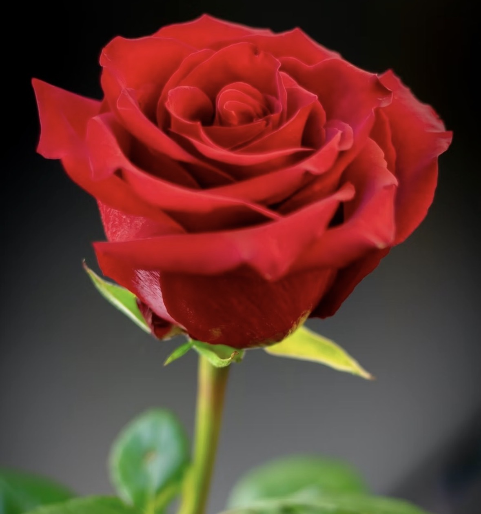
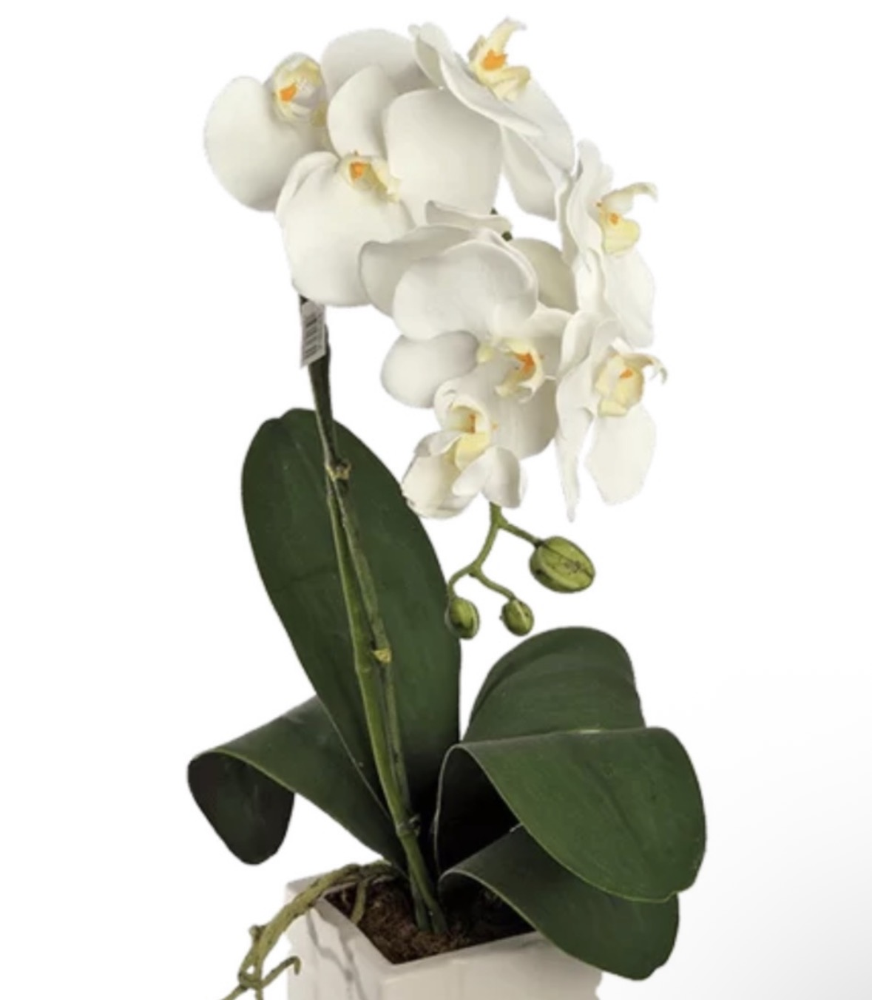
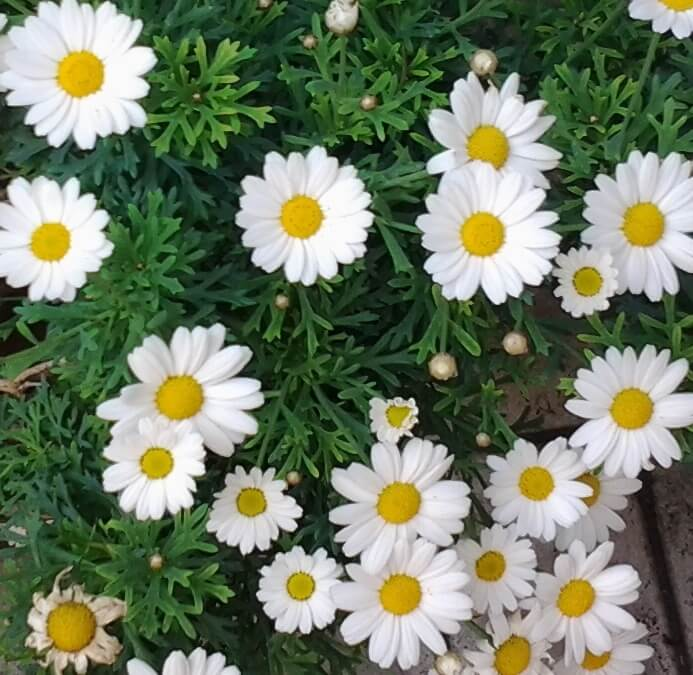
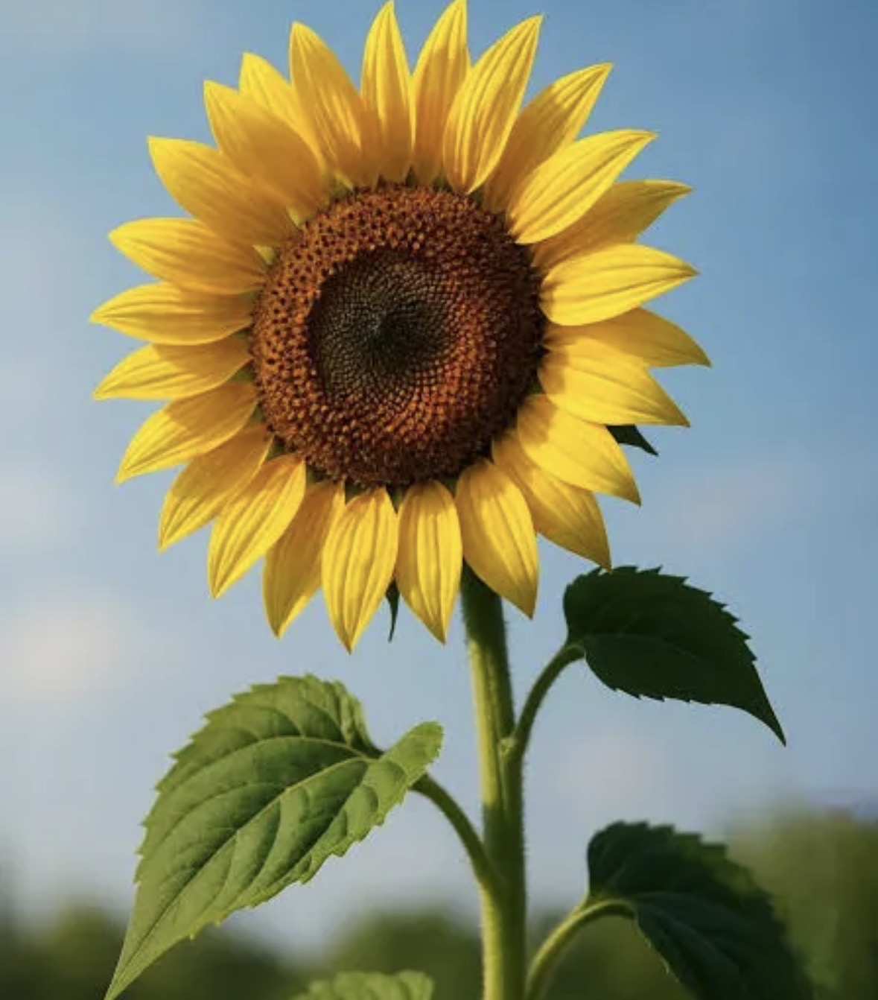
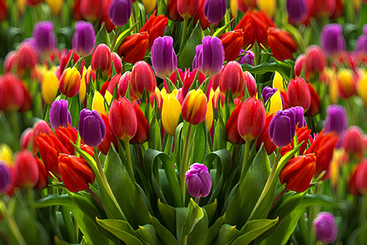
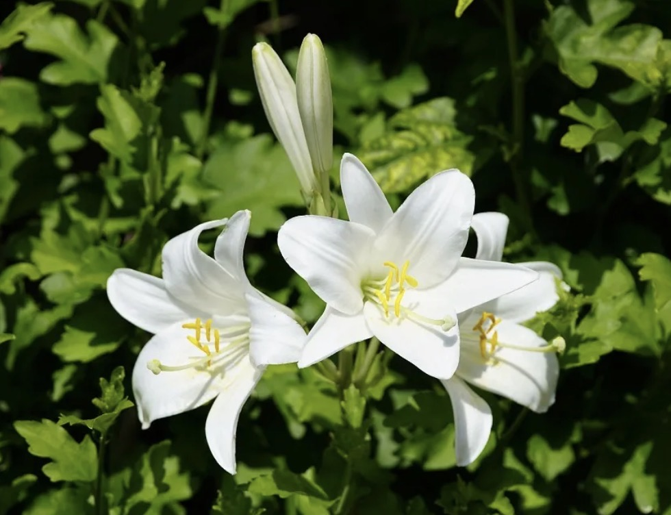
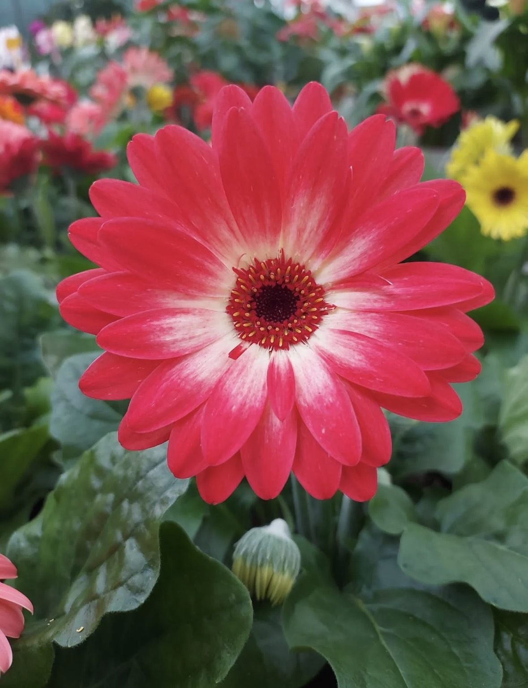
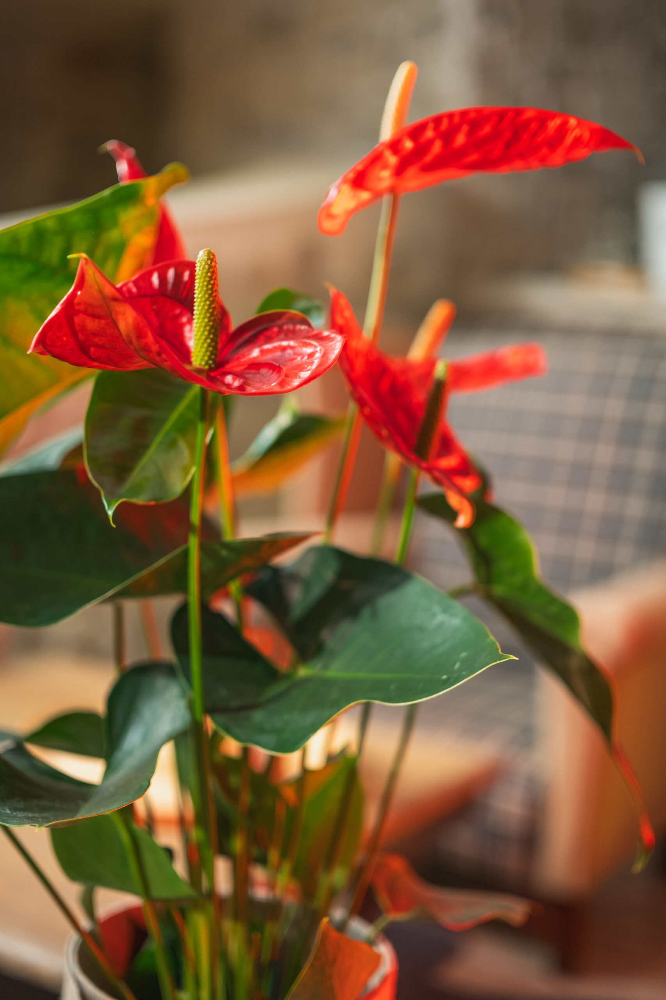
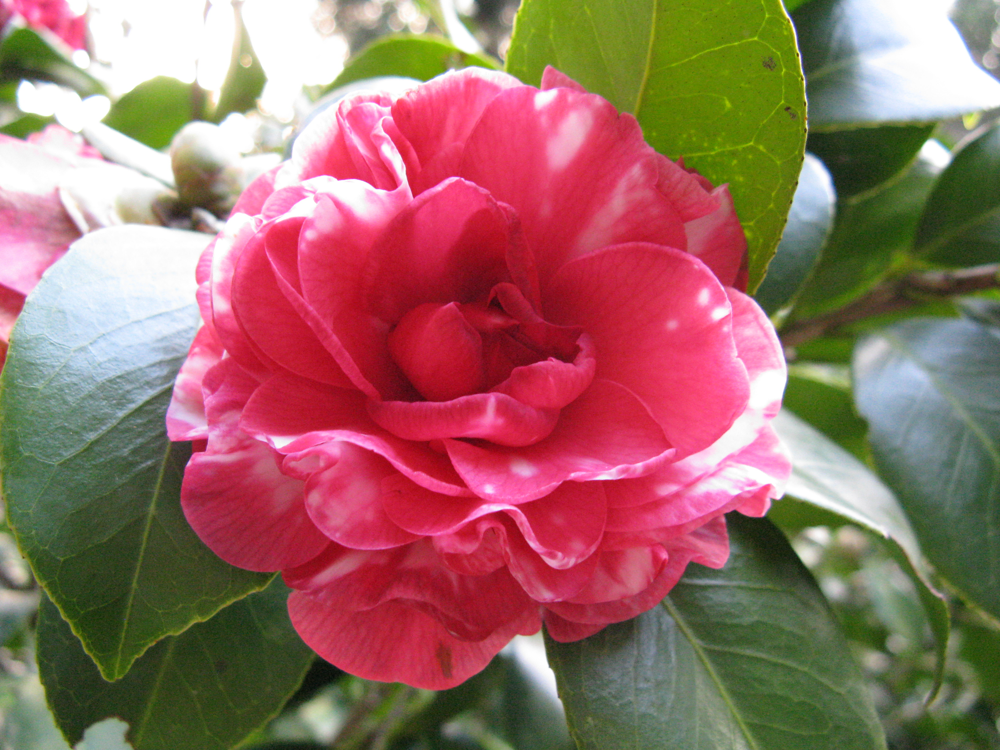
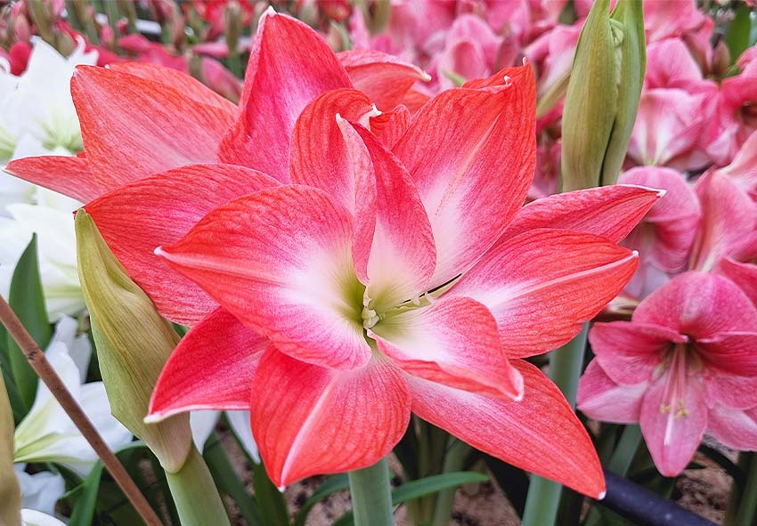

Fiori & Significato

Simbolo di amore passionale, desiderio e intensità. È il fiore dell’amore per eccellenza.

Bellezza rara, sensualità e raffinatezza. Legata alla seduzione e all’attrazione profonda.

Purezza, innocenza e amore giovane. Simbolo di sincerità e spontaneità.

Energia, forza e ammirazione. Rappresenta un amore luminoso che sostiene e dà vitalità.

Amore perfetto, armonia ed eleganza. Il tulipano rosso è una dichiarazione d’amore intensa.

Amore romantico, prosperità e femminilità. Molto usata nei matrimoni.

Purezza, nobiltà e sincerità. Nelle varietà arancioni richiama la passione ardente.

Gioia, vitalità e amore giovane. Fiore allegro e spontaneo.

Amore eterno, delicatezza e protezione. Perfetta per accompagnare rose e peonie.

Passione, energia e desiderio. Uno dei fiori più sensuali.

Amore devoto, rispetto ed eleganza. Fiore raffinato e profondo.

Seduzione, forza e orgoglio. Fiore molto passionale e deciso.
Fiori della Passione
Rosa rossa – amore fisico e totale
Orchidea viola – sensualità e seduzione raffinata
Anthurium – passione ardente e energia
Amaryllis – forza, orgoglio e attrazione intensa
Lilium arancio – passione vivace e dinamica
Peonia rosa intensa – romanticismo passionale ed elegante
Fiori dell’Amore
Rosa rosa – amore dolce e romantico
Peonia – amore romantico e armonioso
Tulipano bianco – amore puro e desiderio di pace
Margherita – amore sincero e genuino
Gypsophila – amore eterno e delicato
Camelia – amore devoto e rispettoso